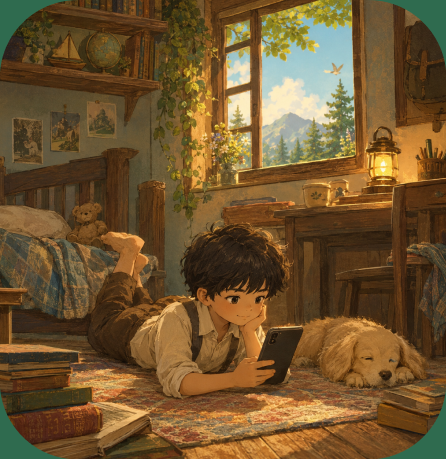

More than a bookstore.
A place to belong.
Reading clubs, workshops, and programmes built around the belief that reading grows better together.
Read>>>Screen Time
Why Reading Is More Powerful Than Screen Time for Children...


Reel to Movies
Some books make it to the big screens — come find out if you can see your favorite characters on big screens!


Blog
Saturday reading club for children. One book per month. One session led by Shweta. An experience that only makes sense if you've read it.

She Writes Too
Fascinating Flags
Buy it on AmazonCome See Us!
Thoraipakkam, Chennai